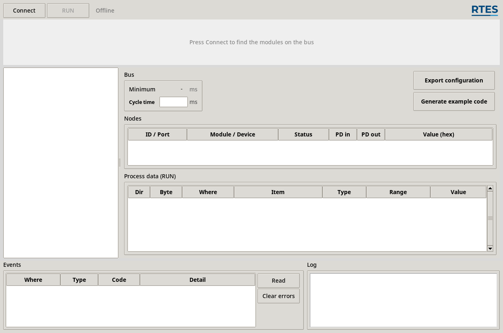
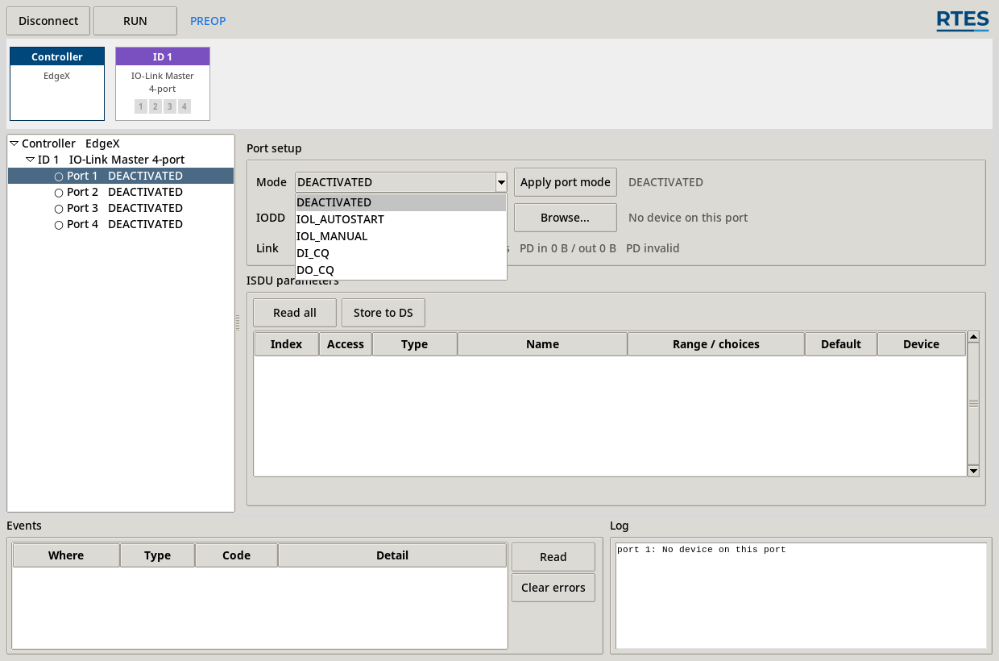
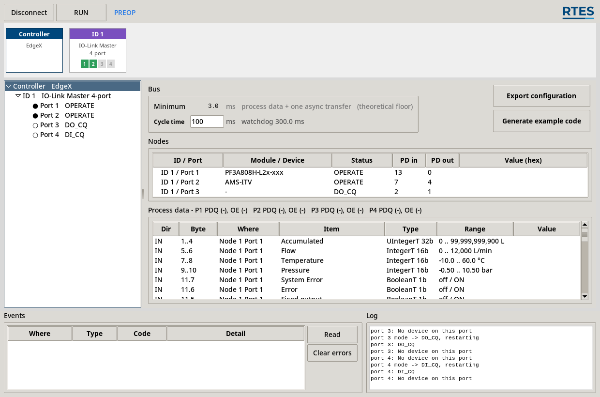
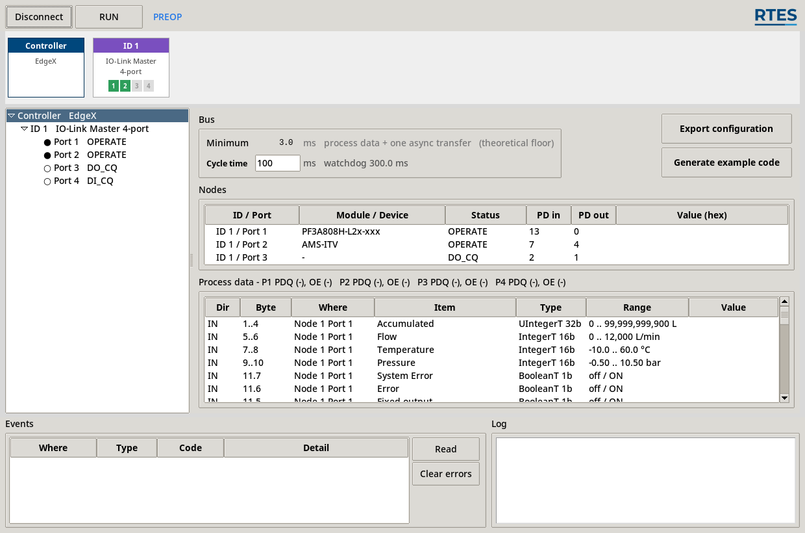
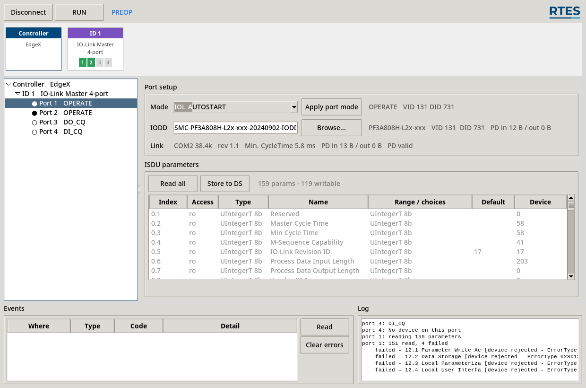
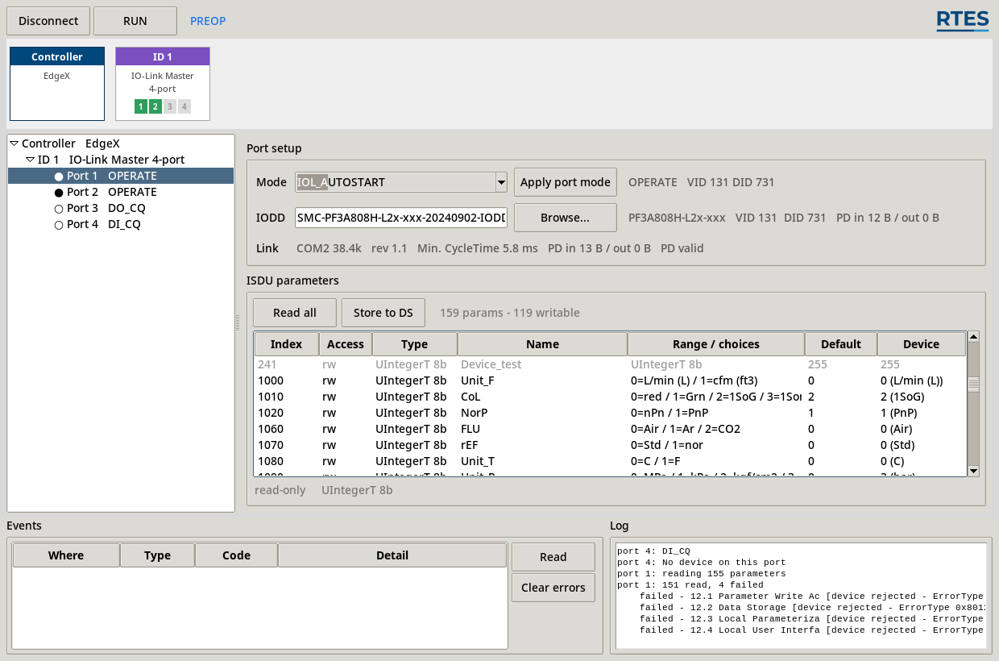
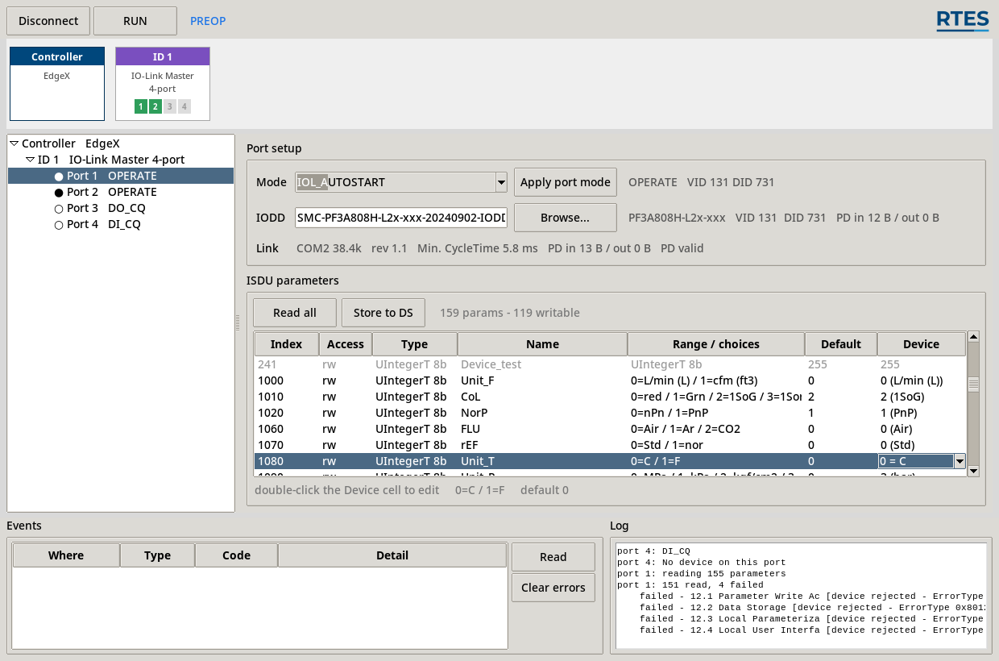
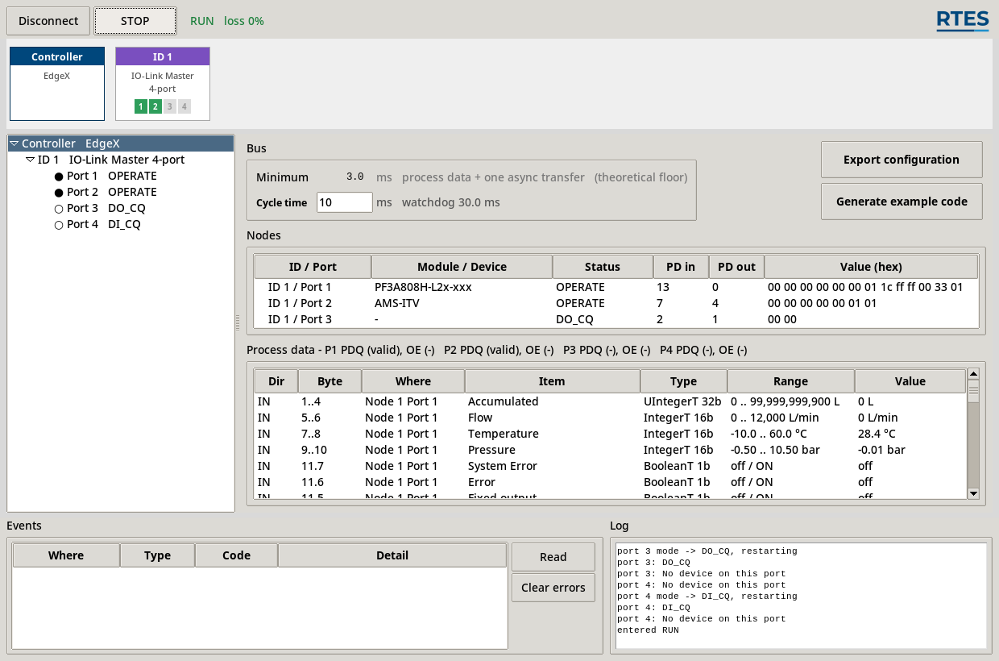

EdgeX API Reference¶
edgelib — EdgeX 슬라이스 I/O 호스트 라이브러리 (Raspberry Pi CM4)
코드 위치¶
| 파일 | 설명 |
|---|---|
edgelib/include/edgelib.h |
C API 공개 헤더 — 전체 함수·상수 선언 |
edgelib/python/edgelib/__init__.py |
Python API — ctypes 래퍼와 공통 상수 |
edgelib/examples/<날짜_시각>/ |
커미셔닝 툴이 내 설비에 맞춰 낸 예제 |
edgelib/EdgeConfig/ |
커미셔닝 툴 — IODD 를 읽어 설정 JSON 을 만든다 |
목차¶
- 개요
- 주소 모델
- 설치 및 시작하기 · 3.1 연결 — LAN 포트로 붙기 · 3.3 따라 해 보기 — 전원을 켜고 예제가 돌 때까지
- 동작 모델 — 반드시 읽을 것
- 공통 상수 및 열거형
- C API
- Python API
- 사용 예제
- API 빠른 참조 표
- 변경 이력
1. 개요¶
edgelib 은 EdgeX 슬라이스 I/O 모듈을 제어하기 위한 라이브러리입니다. 라이브러리는 C 와 Python 두 가지로 제공되며 같은 기능을 제공합니다.
| 언어 | 헤더/패키지 | API 스타일 |
|---|---|---|
| C (GCC) | #include "edgelib.h" |
edgelib_t* 핸들 기반 함수 |
| Python 3 | from edgelib import EdgeBus |
EdgeBus() 클래스 메서드 |
핸들 하나가 버스 하나입니다. 그 버스에 꽂힌 슬레이브 모듈은 노드 주소(1~126)로 구분하고, IO-Link 마스터 모듈이라면 그 안의 포트(1~4)로 다시 나뉩니다.
edgelib_t* ── 노드 1 (IO-Link 마스터) ── 포트 1 ── 유량 센서
└─ 포트 2 ── 전공 레귤레이터
└─ 노드 2 (DI 16채널)
현재 지원하는 모듈은 IO-Link 마스터(카테고리 0x40) 하나입니다. DI·DO·AI·AO 는 추가
예정입니다.
2. 주소 모델¶
모듈은 노드 번호로, IO-Link 마스터 모듈 안은 포트 번호로 가리킵니다.
노드 1 (IO-Link 마스터) ── 포트 1 ── 유량 센서
└─ 포트 2 ── 전공 레귤레이터
노드 2 (DI 16채널)
| 항목 | 값 |
|---|---|
| 모듈당 IO-Link 포트 | 4 |
| 포트당 프로세스 데이터 | 최대 32 B |
| 디바이스 파라미터(ISDU) | 최대 232 B |
노드 번호는 커미셔닝 설정이 정하거나, 설정 없이 쓸 때는 자동으로 배정됩니다. IOLInk 모듈을 사용하는 경우 반드시 IODD를 입력하여 커미셔닝 설정 후 사용하여야 합니다.
3. 설치 및 시작하기¶
3.1 연결 — LAN 포트로 붙기¶
EdgeX-ECore 모듈에는 CM4가 내장되어 마스터 역할을 수행합니다. 따라서 모든 작업은 EdgeX-ECore에 내장된 CM4에 접속하여 수행해야 합니다. 초기 연결을 위해 아래와 같인 네트워크 주소가 설정되어 있습니다.
| 포트 | ||
|---|---|---|
| WAN | RJ-45 | 외부 네트워크. 사내망이나 라우터에 물립니다 |
| LAN | RJ-45 | 내부 네트워크 — 고정 IP 가 미리 잡혀 있습니다 |
LAN 포트는 공장 출하 상태에서 아래와 같습니다. DHCP 서버도 라우터도 없이, PC 와 랜선 한 가닥만으로 붙을 수 있게 해 둔 것입니다.
| 항목 | 값 |
|---|---|
| IP 주소 | 192.168.0.10 |
| 서브넷 마스크 | 255.255.255.0 |
PC 의 IP 를 같은 대역으로 맞춘 뒤(예: 192.168.0.11) SSH나 VNC로 연결할 수 있습니다.
ssh admin@192.168.0.10
| 항목 | 초기값 |
|---|---|
| ID | admin |
| 패스워드 | 1234 |
최초 사용 전에 반드시 바꾸세요. 초기 계정 그대로 설비에 들어가면 같은 제품을 쓰는 누구나 이 계정을 압니다.
3.2 설치¶
요구사항¶
| 항목 | 내용 |
|---|---|
| 플랫폼 | Linux (CM4 라즈비안에서 테스트됨) |
| 빌드 도구 | gcc, make, pthread |
| Python | 3.8 이상 |
| 의존 패키지 | install.sh 가 자동 설치 |
다운로드¶
git clone https://github.com/rteslab/edgelib
cd edgelib/
설치¶
C 라이브러리, Python 라이브러리, 커미셔닝 툴, 의존 패키지를 한 번에 설치합니다.
sudo bash ./install.sh
| 설치물 | 자리 |
|---|---|
| C 헤더 | /usr/local/include/edgelib.h |
| C 라이브러리 | /usr/local/lib/libedgelib.so |
| Python 패키지 | pip show edgelib |
| 커미셔닝 툴 | edgeconfig 명령 |
| 백플레인 포트 | dtoverlay=uart3 → /dev/ttyAMA3 |
| GPIO25 | 부팅할 때마다 High (edgelib-gpio25.service) |
설치 뒤 한 번 재부팅합니다¶
백플레인은 UART3 에 물려 있고, 그 포트는 오버레이를 올려야 생깁니다. install.sh 가
config.txt 에 dtoverlay=uart3 를 넣지만 적용은 재부팅 뒤입니다. 그전에는
/dev/ttyAMA3 이 없어 Connect 가 이렇게 실패합니다.
EdgeError: cannot open /dev/ttyAMA3: No such file or directory
sudo reboot
올라온 뒤 커미셔닝을 시작합니다 (§3.3).
edgeconfig gui
제거¶
sudo bash ./uninstall.sh
3.3 시작하기¶
여기부터는 순서대로 따라 하면 됩니다. 방금 전원을 켠 장비를 앞에 두고, 예제가 화면에 값을 뿌릴 때까지 네 걸음입니다. 화면은 실제로 그 순서로 찍은 것입니다.
edgeconfig gui
edgeconfig 는 설치할 때 생기는 명령입니다. 배포본 안에 그런 이름의 파일은 없고,
install.sh 가 pip install ./EdgeConfig 를 할 때 /usr/local/bin/edgeconfig 로 만들어
집니다 (pyproject.toml 의 [project.scripts]). 그래서 어느 폴더에서 불러도 됩니다.
설치하지 않고 그 자리에서 띄우려면 둘 중 하나입니다.
cd EdgeConfig && bash run_gui.sh # 또는
cd EdgeConfig && python3 -m edgeconfig.cli gui
3.3.1. 커미셔닝 연결 및 장치 설정¶

버튼은 Connect 하나입니다. 누르면 탐색부터 PREOP 까지 한 번에 갑니다 — 주소가 없는
모듈에 주소를 주고, 포트를 열어 무엇이 꽂혔는지 보고, 파라미터를 읽어옵니다.
훑는 것과 붙는 것을 나누지 않았습니다. 훑어 놓고 붙지 않는 상태에 할 수 있는 일이 없고, 나눠 두면 버스를 두 번 훑게 됩니다.
포트가 전부 DEACTIVATED 로 나옵니다¶
전원을 껐다 켠 뒤라면 초기 상태로 모든 port는 DEACITATE로 설정되어 있습니다.
모듈은 포트 설정을 기억하지 않습니다. 주소도 마찬가지입니다. 설정은 마스터가 켤 때마다 내려보내는 것이고, 그래서 어떤 설정이었는지 아는 파일이 필요합니다 — 이 도구가 그 파일을 만듭니다.
포트 설정¶
트리에서 포트를 고르고 Mode 를 고릅니다.

| 모드 | 언제 |
|---|---|
DEACTIVATED |
안 쓰는 포트. 진단을 내지 않습니다 |
IOL_AUTOSTART |
IO-Link. 붙는 것을 그대로 받습니다 — 브링업에 편합니다 |
IOL_MANUAL |
IO-Link. VendorID/DeviceID 가 맞아야 붙습니다 — 설비용 |
DI_CQ |
C/Q(4번 핀)를 디지털 입력으로 |
DO_CQ |
C/Q 를 디지털 출력으로 |
고르기만 해서는 아무것도 나가지 않습니다. Apply port mode 를 눌러야 모듈로 갑니다 —
포트를 다시 세우는 일이라, 잘못 스쳐도 링크가 끊기지 않게 한 단계를 둔 것입니다.
안 쓰는 포트는 DEACTIVATED 로 두세요. IOL_* 로 두면 마스터가 "여기 장비가 있다"고
선언한 것이 되어, 빈 포트가 계속 No Device 진단을 냅니다.

여기서는 1·2 번을 IO-Link, 3 번을 DO_CQ, 4 번을 DI_CQ 로 두었습니다. 결과를 읽는 법:
| 보이는 것 | 뜻 |
|---|---|
Port 1 OPERATE + PF3A808H-L2x-xxx |
디바이스가 붙었고 IODD 도 물렸습니다 (VID/DID 로 자동) |
PD in 13 / out 0 |
그 디바이스가 주는 프로세스 데이터 크기 |
Port 3 DO_CQ PD in 2 / out 1 |
출력 1 B, 입력 2 B — 되읽기 1 B + 핀 2(DI) 1 B (§5.7) |
Port 4 DI_CQ PD in 2 |
C/Q 입력 1 B + 핀 2 1 B |
Minimum 3.0 ms |
이 구성으로 낼 수 있는 주기 하한이 여기서 정해집니다 |
핀 2(DI)는 모드와 무관하게 모든 살아 있는 포트에 실립니다 — IO-Link 로 돌고 있어도 그렇습니다. C/Q 와 별개의 선이고 언제나 입력이라, 있다 없다 할 이유가 없습니다.
IODD 는 폴더에 있으면 저절로 물립니다¶
같은 제품의 IODD 가 EdgeConfig/edgeconfig/iodd/ 에 있으면 툴이 알아서 찾아 물립니다.
붙은 장치가 자기 VendorID·DeviceID 를 말해 주므로, 그것과 맞는 파일을 폴더에서 고릅니다
— 사람이 고를 일이 없습니다.
없으면 넣어 주어야 합니다. 제조사 홈페이지나 IODDfinder
에서 받아 그 폴더에 두고 Connect 를 다시 누르거나, Browse... 로 직접 고릅니다. zip 그대로
두어도 됩니다.
EdgeConfig/edgeconfig/iodd/
├── SMC-PF3A808H-L2x-xxx-20240902-IODD1.1.xml 함께 옵니다
├── SMC-AMS-ITV-20221026-IODD1.1.xml 함께 옵니다
└── <내 장치의 IODD> ← 여기에
IODD 칸이 비어 있고 No IODD for VID … DID … 가 뜨면 못 찾은 것입니다.
IODD 가 없으면 아무것도 되지 않습니다¶
RUN |
막힙니다 |
Export configuration · Generate example code |
막힙니다 |
ISDU parameters |
비어 있습니다 — 목록 자체가 IODD 에서 옵니다 |
IODD 없이 할 수 있는 일이 없기 때문입니다. 프로세스 데이터는 이름도 형도 단위도 없는 바이트 덩어리로만 남고, 파라미터는 무엇이 있는지조차 알 수 없습니다. 그 상태로 운전에 들어가 봐야 화면에 16진수가 흐를 뿐이고, 설정 파일을 내면 응용이 그 덩어리를 어떻게 쪼갤지 알 수 없습니다. 모르는 것을 굳혀 두지 않습니다.
SIO(DI_CQ · DO_CQ)와 빈 포트는 해당이 없습니다 — 비트 하나가 전부라 설명할 것이
없습니다.
주소를 고정하려면 트리에서 노드를 골라 Fixed 로 두고 번호를 적습니다. 탐색이 준
번호는 발견 순서에 따라 달라지므로, 설비에서는 고정해 두는 편이 낫습니다.

| 자리 | 무엇 |
|---|---|
| 위쪽 카드 | 이 선에 붙은 것들. 카드 아래 작은 번호가 포트고, 살아 있으면 초록으로 켜집니다 |
| 왼쪽 트리 | 같은 것을 목록으로. 여기서 고른 것이 오른쪽에 열립니다 |
| Bus | Minimum 은 계산으로 나온 주기 하한, Cycle time 은 실제로 돌 주기. 오른쪽에 워치독이 따라옵니다 |
| Nodes | 어느 포트에 무엇이 꽂혔고 PD 가 몇 바이트인지. Value (hex) 는 운전 중 그 포트의 원시 바이트 |
| Process data (RUN) | 항목별로 어느 바이트에 있고 어떤 형이고 지금 값이 얼마인지 |
| Events | 지금 성립 중인 사건. 통신 두절, 디바이스 고장 같은 것들 (§6.5) |
| Log | 방금 한 일과 그 결과. 거절당하면 이유가 여기 그대로 남습니다 |
Events 와 Log 는 다릅니다. Log 는 흘러가는 기록이고, Events 는 아직 해소되지 않은 사실입니다. 줄이 하나라도 서 있으면 그 원인이 살아 있다는 뜻이고,
Clear errors는 이미 해소된 것만 지웁니다 — 고치지 않고 지우는 길은 없습니다.
3.3.2. IOLink 디바이스 파라미터 설정 - ISDU¶
IO-Link 포트를 고르면 아래에 그 장치의 설정 전부가 나옵니다. IODD 가 알려 준 목록이고, 값은 장치에서 읽어온 것입니다.

| 열 | 무엇 |
|---|---|
| Index | 파라미터 번호. 24 처럼 정수이거나 0.1 처럼 인덱스.서브인덱스 |
| Access | ro 읽기 전용 · rw 읽고 쓰기 |
| Type | 데이터 형과 폭 |
| Name | IODD 가 붙인 이름 |
| Range / choices | 넣을 수 있는 값. 열거형이면 0=… 1=… 로 |
| Default | 공장 초기값 |
| Device | 지금 장치에 들어 있는 값 |
붙을 때 자동으로 한 번 다 읽습니다 — 159 params - 119 writable. Read all 은 다시 읽을
때 씁니다.
못 읽은 것도 감추지 않습니다. 위 화면의 151 read, 4 failed 가 그것이고, 무엇이 왜
실패했는지는 Log 에 남습니다 — 12.1 Parameter Write Ac [device rejected - ErrorType 0x8011]
처럼. 장치가 자기 것이 아니라고 답한 인덱스이지 도구의 오류가 아닙니다.
바꿀 수 있는 것은 rw 뿐¶

목록의 앞쪽은 대부분 ro — 이름·일련번호·리비전처럼 읽기만 되는 것입니다. 이 장치를
어떻게 동작시킬지는 뒤쪽 rw 항목에 있습니다.
파라미터 수정 : 더블 클릭하여 수정 후 엔터¶

Device 칸을 두 번 누르면 그 자리에서 고쳐집니다. 열거형이면 목록으로, 숫자면 입력
칸으로 열립니다. 엔터를 치면 곧바로 장치에 씁니다 — 따로 "적용" 버튼이 없습니다.
표 아래 줄이 그 항목의 범위와 기본값을 알려 줍니다.
ro 인 항목을 누르면 편집기가 열리지 않고 read-only 라고만 나옵니다.
쓴 값은 장치의 비휘발성 메모리에 저장됩니다. 도구를 닫아도, 전원을 껐다 켜도 장치가 들고 있습니다
왜 RUN 보다 먼저인가¶
환산이 장치 설정에 딸려 있기 때문입니다. 위 화면의 1080 Unit_T 를 1 = F 로 두면
같은 원시값이 섭씨가 아니라 화씨가 됩니다. 1000 Unit_F(L/min · cfm)나 1060 FLU(Air ·
Ar · CO2)도 마찬가지입니다.
커미셔닝은 이 값들을 실제로 읽어서 환산 계수를 고릅니다. 그러니 순서가 이렇습니다 — 장치를 원하는 대로 만들어 둔 다음에 설정 파일을 냅니다. 반대로 하면 파일 안의 계수가 장치와 어긋납니다.
같은 일을 응용에서 하려면 edgelib_iol_device_write()로 수행할 수 있습니다.
IOLink 는 일반적으로 Pre-Operation 상태에서 파라미터를 설정하고 Operate 상태로 천이하며, 일반적으로 한번 파라미터가 설정되면 특별히 변경하지 않기 때문에 자동으로 Operation으로 천이해 Cyclic 통신을 수행하게 됩니다.
장치를 변경할때 자동으로 기존 파라미터 값으로 설정해주는 DS(Data Storage) 모듈은 아직 미지원하며, 추후 지원 예정입니다.
3.3.3. IOLink 장치 실행 (RUN)¶

Cycle time 을 정하고 RUN 을 누릅니다. Minimum 보다 짧게 넣으면 라이브러리가 막습니다
— 프레임을 놓칠 것이 뻔한 설정으로 운전에 들어가지 않습니다 (§6.3).
Cycle time 은 CM4 모듈이 백플레인으로 연결된 모든 노드의 데이터를 주기적으로 읽어 오기 위해서 사용하는 주기로, 연결된 노드의 개수와 송수신 데이터의 크기에 따라 달라질 수 있습니다. 현재 설정된 노드 정보를 기반으로 최소 Cycle이 계산되고 이보다 큰 시간을 설정하여야 통신 누락 없이 사용할 수 있습니다. 현재는 추후 백플레인 통신 기능을 커널에 디바이스 드라이버로 개발하여 실시간 성능을 높일 예정이며, 현재는 노드 1개 추가시 3ms 정도 추가된다고 가정하면 됩니다.
설정한 Cycle time이 적절한지 테스트하기 위해 설정 툴에서 RUN을 누르면 송수신 도중 메지시 손실율을 보여주고 있으며 손실이 생기는 경우 CPU 로드를 낮추거나, Cycle time을 더 길게 설정하여야 합니다.
운전 가능 여부는 세 군데로 가릅니다.
| 보는 곳 | 괜찮다는 것 |
|---|---|
위쪽 RUN loss 0% |
최근 100 주기의 프레임 손실. 올라가면 주기가 짧은 것입니다 |
P1 PDQ (valid) |
그 포트의 데이터를 써도 된다고 디바이스가 선언한 것 |
Events 가 비어 있음 |
성립 중인 사건이 없음 |
P3 PDQ (-) · P4 PDQ (-) 는 고장이 아닙니다. SIO 포트에는 PQ 도 OE 도 서지
않습니다 — 유효를 선언할 디바이스가 없기 때문이고, 규격이 그렇게 정한 것입니다 (§5.7).
Value 칸은 환산을 거친 물리량입니다 — 283 이 아니라 28.4 °C 입니다. 그 옆
Nodes 표의 Value (hex) 가 같은 순간의 원시 바이트라, 둘을 나란히 보면 환산이 맞는지
눈으로 확인됩니다.
watchdog 30.0 ms 는 설정한 Cycle time 의 세배의 시간이고, 이 시간 동안 통신이 없으면 백플레인 통신 오류로 고장 이벤트가 등록되고 통신은 멈추게 됩니다. 모든 모듈은 Fail-Safety로 천이하여 안전한 값을 출력하게 됩니다.
4. 예제 코드 생성 및 예제 실행¶
IOLink 모듈의 경우 연결된 디바이스에 따라 송시신 데이터의 크기 및 의미가 다르기 때문에 IODD 설정을 기반으로 데이터 송수신 예제 코드를 생성해 줍니다. 이 코드는 개발을 시작할 때 필요한 기본적인 API 사용 예제와 실제 동작 여부를 테스트하는지 확인할 수 있는 기능을 제공합니다. 이 예제 프로그램을 활용하여 고객이 필요한 User Application을 개발할 수 있으며, C언어와 Python 예제를 제공하고 있습니다. 실시간 통신이 필요한 백플레인 통신은 C언어로 개발되어 백그라운드 쓰레드에서 실행되고 있지만, 실시간 성능이 필요한 경우 C언어 예제를 사용하는 것이 유리합니다.
| 버튼 | 무엇을 |
|---|---|
| Export configuration | <이름>.json · <이름>.h · <이름>_pd.py |
| Generate example code | 위 셋 + 돌아가는 예제를, 언어별 폴더로 |
두 버튼을 나눈 이유는 하나입니다 — 예제는 고객이 고쳐 쓰는 파일이라, 설정을 다시 낼 때마다 덮어쓰면 안 됩니다.
Generate example code 는 누를 때마다 새 폴더를 만듭니다. 설정을 바꿔 가며 여러 벌
뽑아 놓고 비교할 수 있습니다.
examples/20260818_050520/
├── c/
│ ├── edgex.json 설정 - 예제가 읽는다
│ ├── edgex.h 구조체와 디코더
│ ├── edgex_example.c
│ └── Makefile
└── python/
├── edgex.json
├── edgex_pd.py 데이터클래스
└── edgex_example.py
설정 파일이 양쪽에 있습니다. 폴더 하나만 떼어 가도 돌아가야 하기 때문입니다.
cd examples/20260818_050520/python
python3 edgex_example.py 25 # 25 초 동안
cd ../c
make && ./edgex_example 25
둘은 같은 것을 같은 순서로 합니다. 화면이 같아야 "파이썬으로 되던 것이 C 로도 되는가" 를 눈으로 확인할 수 있습니다.
예제가 보여주는 것¶
API 를 쓰는 순서대로 한 번씩 밟고, 마지막에 셋을 동시에 돌립니다.
1. 버스에 무엇이 있나 node_count · node_info · image_size
2. 마스터와 포트에 묻기 iol_master_ident · iol_port_status
iol_readback_port_configuration
3. 디바이스 파라미터 iol_device_read · iol_device_write · iol_abort
4. 운전으로 setmode · getmode
5. PD 를 이름으로 읽기 In.read
6. 출력 쓰기 Out.write
7. 무엇이 잘못됐나 get_event · clear_event
→ 그다음 5·7·3 을 한 화면에서 같이, 제자리 갱신으로
마지막 구간은 모니터처럼 한 자리에서 갱신됩니다. 위에서 정한 구성 그대로입니다.
edgex.json state RUN 25.0 s / 25 s C/Q off
------------------------------------------------------------------------
node 1 port 1 IO-Link PQ ok
data accumulated 0 L flow 0 L/min temperature 28.4 °C
pressure -0.01 bar system_error off error off
pin2 di ON
node 1 port 2 IO-Link PQ ok
data output_pressure_value 0 error_flag off standby_reached off
pin2 di ON
node 1 port 3 SIO
C/Q Output off
C/Q Readback off
DI (pin 2) off
node 1 port 4 SIO
C/Q Input ON
DI (pin 2) ON
events none
isdu 80 transactions completed
node 1 port 1 VendorName SMC Corporation
node 1 port 1 ProductName PF3A808H-L2x-xxx
IO-Link 포트는 data(디바이스가 준 프로세스 데이터)와 pin2(마스터가 읽은 핀 2)를
나누어 찍습니다. 둘의 출처가 다르기 때문입니다 — 디바이스가 죽어도 핀 2 는 살아
있습니다.
DO_CQ 포트는 예제가 1 초마다 출력을 뒤집습니다. C/Q Output 은 우리가 보낸 값,
C/Q Readback 은 선에서 되읽은 값입니다. 둘이 다르면 드라이버가 접힌 것입니다 —
단락이나 과전류로 1 을 보내도 선이 0 일 수 있습니다.
isdu … transactions completed 줄이 이 예제의 요점입니다. ISDU 가 진행 중인데도
프로세스 데이터가 멈추지 않습니다. 주기 통신을 C 스레드에 둔 이유가 그것입니다 (§4.1).
터미널이 아니면(파이프·리다이렉션) 커서 제어를 쓰지 않고 그냥 찍습니다. | tee run.log
가 그대로 읽힙니다.
한 조각만 보고 싶으면¶
예제 한 벌이 API 를 두루 보여주느라 깁니다. 짧은 것을 보려면 §8 의 사용 예제가 주제별로 하나씩 잘려 있습니다 — 프로세스 데이터 읽기, 출력 쓰기, 디바이스 파라미터, 이벤트 감시.
3.4 명령줄로 커미셔닝하기¶
화면 없이도 됩니다. GUI 가 하는 일을 그대로 합니다.
python3 -m edgeconfig.commission line_a --cycle-us 10000
IODD 를 VID/DID 로 찾아 PD 항목의 이름·단위·환산을 얻고, 환산이 조건부면 그 조건이 가리키는 디바이스 파라미터를 ISDU 로 실제로 읽어 계수를 고릅니다 — "℃ 인지 ℉ 인지"는 장치 설정에 달렸고, 그것을 모르면 계수를 고를 수 없습니다.
3.5 내 프로그램 만들기¶
cc my_app.c -ledgelib -pthread -o my_app
생성 헤더를 쓰면 -I 로 그 폴더를 알려 줍니다.
cc my_app.c -I examples/20260818_035520/c -ledgelib -pthread -o my_app
4. 동작 모델¶
4.1 백그라운드 스레드가 계속 돕니다¶
edgelib_open() 이 성공하면 주기 통신 스레드가 시작되고 edgelib_close() 까지 멈추지
않습니다.
모듈이 통신을 감시하기 때문입니다:
통신이 끊기면 → 모듈이 안전 상태로 들어갑니다
→ **출력이 물리적으로 내려갑니다**
→ 에러가 남아, 소거하기 전에는 운전으로 못 돌아옵니다
밸브가 닫히고 실린더가 원위치로 갑니다. 데이터를 놓치는 것이 아니라 설비가 움직입니다.
close()를 반드시 호출하세요. 파이썬은with문을 쓰면 보장됩니다. 프로세스가 그냥 죽으면 모듈은 안전 상태로 들어갑니다 — 안전한 결말이지만, 다음에 다시 붙을 때 에러 소거가 필요합니다.
4.2 시작하는 방법이 둘입니다¶
브링업 · 시험 open(NULL) → setmode(RUN)
설비 운전 open("line_a.json") → setmode(RUN)
차이는 open() 의 인자 하나입니다. 설정을 주면 그것과 대조하고, 안 주면 붙어 있는
것을 그대로 씁니다. 어느 쪽이든 setmode() 가 중간 단계를 알아서 밟습니다 (§4.3).
자동 구성 — 설정 없이¶
autoconfig() 는 연결된 모듈을 찾아 그 종류에 맞게 알아서 구성합니다. 노드 번호도
자동으로 배정됩니다. 설정 파일이 필요 없습니다.
IO-Link 포트는 지금 꽂혀 있는 디바이스에 맞춰 구성됩니다. 그래서 두 가지가 따릅니다:
| 디바이스가 빠져 있으면 | 그 포트는 자리가 없습니다. 나중에 꽂아도 다시 구성해야 합니다 |
| 디바이스를 바꿔 꽂으면 | 사이클 시간이 조용히 달라집니다 |
브링업과 시험에는 편하고, 설비에서는 이 둘이 곤란합니다.
커미셔닝 — 설비 운전용¶
미리 만들어 둔 설정을 쓰면 꽂힌 것과 무관하게 구성이 고정됩니다.
| 자동 구성 | 커미셔닝 | |
|---|---|---|
| 노드 번호 | 자동 배정 | 설정이 지정 |
| 프로세스 데이터 구성 | 지금 꽂힌 디바이스 기준 | 설정 — 빠져 있어도 자리 유지 |
| 사이클 시간 | 자동 계산 | 설정 — 바뀌지 않는다 |
| 모듈 종류 확인 | 안 함 | 함 — 다르면 멈춤 |
EdgeConfig — 커미셔닝 툴¶
설정은 EdgeConfig 로 만듭니다 — edgelib 에 함께 설치되는 GUI 도구입니다. 화면을 따라 가는 설명은 §3.3 에 있고, 여기서는 그것이 무엇을 내는지만 봅니다.
line_a.json |
설정 — edgelib_open() 이 읽습니다 |
line_a.h |
C 구조체와 변환 함수 (§6.9) |
line_a_pd.py |
같은 것을 파이썬으로 |
IO-Link 를 쓰면 IODD 가 필요합니다. 디바이스마다 프로세스 데이터 구성이 달라서 그 정보가 IODD 에만 있습니다 — 어느 비트가 무엇인지, 원시값을 무엇으로 곱해야 물리량이 되는지까지. IODD 는 디바이스 제조사가 배포합니다.
4.3 상태를 밟아 올라갑니다¶
STARTUP ──► PREOP ──► RUN
설정 주기 데이터 교환
| 상태 | 할 수 있는 일 |
|---|---|
STARTUP |
노드 탐색, 주소 배정 |
PREOP |
포트 설정 · 파라미터 쓰기. 주기 데이터는 안 돈다 |
RUN |
프로세스 데이터 교환. 설정 쓰기는 막힌다 |
FAILSAFE |
정지. 나가는 길은 STARTUP 하나뿐 |
한 단씩만 올라갑니다. edgelib_setmode() 가 필요한 단계를 알아서 밟습니다.
4.4 프로세스 데이터는 스냅샷입니다¶
읽는 길이 둘입니다. 바이트로 받거나(§6.8), 생성된 구조체로 받거나(§6.9) 입니다.
뒤쪽은 커미셔닝이 알아낸 이름·단위·환산이 코드에 굳어 있어 in.n1_p1.temperature 가 곧
28.3 입니다. 앞쪽은 언제나 되고, 뒤쪽은 설정 파일로 열었을 때만 됩니다.
edgelib_image_in() 은 버스를 타지 않습니다. 배경 스레드가 매 사이클 갱신한 값을
복사할 뿐이라 즉시 돌아옵니다. 원하는 만큼 자주 불러도 통신 부하가 없습니다.
edgelib_image_out() 도 마찬가지로 즉시 돌아오고, 실제 전송은 다음 주기입니다.
출력을 켜려면
OE를 명시해야 합니다 — 생성 구조체의enable멤버입니다. 값을 쓰는 것과 "이 값을 쓰라"고 말하는 것은 다릅니다.OE = 0이면 디바이스는 무효로 보고 자기 페일세이프 동작으로 들어갑니다.
4.5 ISDU 는 오래 걸립니다¶
디바이스 파라미터 읽기·쓰기(device_read/device_write)는 수십 ms 에서 5 초까지
걸릴 수 있습니다. 호출은 그동안 블록되지만 주기 통신은 계속 돕니다.
타임아웃을 직접 주려면 5 초보다 넉넉하게 잡으세요. 짧게 잡으면 정상적으로 느린 디바이스를 고장으로 판정합니다.
5. 공통 상수 및 열거형¶
5.1 ResultCode¶
#define EDGE_OK 0
#define EDGE_ERR_BAD_PARAM -1
#define EDGE_ERR_BAD_STATE -2 /* 지금 상태에서 안 되는 요청 */
#define EDGE_ERR_BAD_CHANNEL -3 /* 없는 노드·포트 */
#define EDGE_ERR_BUSY -4 /* 그 포트에 ISDU 가 진행 중 */
#define EDGE_ERR_UNSUPPORTED -5
#define EDGE_ERR_TIMEOUT -6 /* 응답 없음 */
#define EDGE_ERR_DEVICE -7 /* 디바이스가 거부 — ErrorType 을 함께 준다 */
#define EDGE_ERR_COMMS -8 /* 통신 오류 */
#define EDGE_ERR_NO_MEM -9
#define EDGE_ERR_UNDEFINED -99
edgelib_error_msg(int) 가 사람이 읽을 문자열을 돌려줍니다.
5.2 State¶
typedef enum {
EDGE_STATE_STARTUP = 0,
EDGE_STATE_PREOP = 1,
EDGE_STATE_RUN = 2,
EDGE_STATE_FAILSAFE = 3,
} EdgeState_e;
5.3 PortMode — IO-Link 포트 동작 모드¶
typedef enum {
EDGE_PM_DEACTIVATED = 0, /* 안 쓰는 포트. 진단을 내지 않는다 */
EDGE_PM_IOL_MANUAL = 1, /* IO-Link. VendorID/DeviceID 대조 */
EDGE_PM_IOL_AUTOSTART = 2, /* IO-Link. 대조 없이 붙는 것을 받는다 */
EDGE_PM_DI_CQ = 3, /* C/Q 를 디지털 입력으로 */
EDGE_PM_DO_CQ = 4, /* C/Q 를 디지털 출력으로 */
} EdgePortMode_e;
안 쓰는 포트는
DEACTIVATED로 두세요.IOL_*로 두면 마스터가 "여기 장비가 있다"고 선언한 것이 되어, 비어 있는 포트가 계속No Device진단을 냅니다.
5.4 PortStatusInfo — 포트의 현재 상태¶
| 값 | 이름 | 뜻 |
|---|---|---|
| 0 | NO_DEVICE |
IOL_* 로 설정했는데 디바이스가 안 답한다 |
| 1 | DEACTIVATED |
안 쓰는 포트 |
| 2 | PORT_DIAG |
기동·검증·데이터스토리지 실패 |
| 4 | OPERATE |
정상. 프로세스 데이터가 돈다 |
| 5 | DI_CQ |
C/Q 디지털 입력 |
| 6 | DO_CQ |
C/Q 디지털 출력 |
| 254 | PORT_POWER_OFF |
L+ 를 껐다 |
| 255 | NOT_AVAILABLE |
5.5 이벤트¶
typedef struct {
uint8_t node; /* 노드 주소 */
uint8_t channel; /* 0 = 모듈 자신, 1~n = 포트 */
uint8_t mode; /* 1 single shot · 2 해소 · 3 성립 */
uint8_t type; /* 1 notify · 2 warning · 3 error */
uint16_t code; /* EventCode — 아래 대역 */
uint16_t qualifier; /* IO-Link EventQualifier 원본 */
uint32_t timestamp_ms;/* 모듈 기동 후 경과. 최초 발생 시각 */
} edge_event_t;
node == 0이면 라이브러리 자신의 관찰입니다 (§6.5 의 통신 품질). 그때는channel이 어느 노드를 본 것인지,qualifier가 관측 손실률(%)입니다. 모듈이 올린 이벤트에서channel이 포트를 가리키듯, 여기서는 노드를 가리킵니다.
EventCode 는 변환하지 않습니다. 대역이 겹치지 않아 번호만 보면 출처를 알 수 있습니다.
| 대역 | 출처 |
|---|---|
0x0000~0x0FFF |
백플레인 자신 — 0x0101 통신 두절 등 |
0x1000~ |
IO-Link 디바이스 (규격 Table D.1) |
0x1800~ |
IO-Link 포트 (규격 Table D.2) — 0x1800 No Device 등 |
type은 심각도가 아니라 "이 이상에서 설비를 세울 것인가"입니다. 포트 하나의 고장으로 모듈 전체를 세우지 않으므로, 디바이스가error라고 말한 것도warning으로 올라옵니다. 원래 심각도는qualifier에 그대로 있습니다.
5.6 조회가 채워 주는 것¶
#define EDGE_MAX_PORTS 8
typedef struct {
uint8_t port;
uint8_t mode; /* EdgePortMode_e */
uint8_t pd_in; /* 바이트 수 */
uint8_t pd_out;
uint16_t vendor_id;
uint32_t device_id;
} edge_port_t;
typedef struct {
uint8_t address;
uint8_t category; /* UID 앞 4 바이트 — 맞는 모듈인지 보는 근거 */
uint8_t model;
uint8_t variant;
uint8_t hw_rev;
char serial[24];
char type_name[48];
uint16_t pd_in; /* 한정자 1 B 를 포함합니다 */
uint16_t pd_out;
uint16_t image_in_off; /* 버스 전체 이미지에서 이 노드가 시작하는 자리 */
uint16_t image_out_off;
uint8_t port_count;
edge_port_t ports[EDGE_MAX_PORTS];
} edge_node_t;
typedef struct {
uint16_t vendor_id;
uint32_t master_id;
uint8_t port_count;
uint8_t master_type;
char product[32];
} edge_master_ident_t;
typedef struct {
uint8_t mode; /* EdgePortMode_e */
uint8_t validation; /* 0 없음 · 1 호환 · 2 동일 */
uint8_t iq_behavior;
uint8_t cycletime; /* Table B.3 부호화 옥텟. 0 이면 디바이스에 맡깁니다 */
uint16_t vendor_id; /* validation 이 0 이 아닐 때만 봅니다 */
uint32_t device_id;
} edge_port_cfg_t;
typedef struct {
uint8_t status; /* §5.4 */
uint8_t quality; /* bit0 PD invalid · bit1 PDout invalid */
uint8_t revision_id; /* 상위 니블 major, 하위 minor */
uint8_t rate; /* 0 미검출 · 1~3 COM1~COM3 */
uint8_t cycletime; /* Table B.3 부호화 옥텟 */
uint8_t pd_in;
uint8_t pd_out;
uint16_t vendor_id;
uint32_t device_id;
uint32_t cycletime_us; /* 위 옥텟을 푼 값 — 편의 */
} edge_port_status_t;
image_in_off · image_out_off 가 있는 이유는 §6.8 이 이미지를 통째로 주기
때문입니다. 노드 하나만 보고 싶으면 이 자리에서 그 노드의 pd_in 만큼 잘라 냅니다.
5.7 프로세스 데이터 이미지 배치¶
응용이 오프셋을 직접 셀 일은 없습니다 — 생성 코드가 대신합니다 (§6.9). 그래도 바이트로 다뤄야 할 때(자동 구성)와 자리가 왜 그만큼인지 따질 때를 위해 배치를 적어 둡니다.
이미지 = 노드 1 구간 │ 노드 2 구간 │ … ← 주소 순서
노드 구간은 한정자 한 바이트로 시작하고, 그 뒤에 포트가 번호 순서로 붙습니다.
입력 [MST] [포트 1 …] [포트 2 …] … MST : 상위 니블 ISDU_RDY, 하위 니블 PQ
출력 [OE ] [포트 1 …] [포트 2 …] … OE : 하위 니블. 어느 쪽이든 비트 = 포트 − 1
포트가 차지하는 자리는 모드가 정합니다.
| 포트 모드 | 입력 | 출력 |
|---|---|---|
IOL_* (OPERATE) |
디바이스 PD 입력 n B + DI 1 B |
디바이스 PD 출력 m B |
DI_CQ |
C/Q 1 B + DI 1 B | — |
DO_CQ |
C/Q 되읽기 1 B + DI 1 B | C/Q 1 B |
DEACTIVATED |
— | — |
핀 2(DI)는 모든 살아 있는 포트에 실립니다 — IO-Link 로 돌고 있어도 마찬가지입니다. 핀 2 는 C/Q 와 별개의 선이고 언제나 입력이라, 모드에 따라 있다 없다 할 이유가 없습니다.
DI 는 포트 구간의 맨 뒤입니다. 디바이스 데이터가 앞이고 DI 가 뒤라서, 나중에 DI 가 생겨도 앞쪽 오프셋이 밀리지 않습니다.
DO_CQ 의 입력 1 바이트는 선에서 되읽은 값입니다. 우리가 쓴 값이 아니라 실제 선의
상태라, 단락이나 과전류로 드라이버가 접히면 쓴 값과 달라집니다.
SIO 포트에는 PQ 도 OE 도 서지 않습니다¶
DI_CQ · DO_CQ 포트는 MST 의 PQ 비트가 서지 않고, OE 비트를 세워도 아무 일도
일어나지 않습니다. 규격이 그렇게 정한 것이지 구현의 사정이 아닙니다.
| 근거 (IO-Link 규격 v1.1.5) | 무엇 |
|---|---|
| Table E.10 각주 a | PQI 는 디지털 입력 모드에서 의미가 없다 |
| 규격 §11.7.3.2 | SIO 모드에는 IO-Link 세션이 없어 AL_SetOutput 도 AL_Control 도 없다 |
PQ 는 디바이스가 "내 프로세스 데이터가 유효하다"고 선언하는 값입니다. SIO 에는 그렇게
선언할 디바이스가 없습니다 — 마스터가 핀의 전기 상태를 읽을 뿐이고, 그 값은 언제나
그 순간의 사실입니다. OE 도 같은 이유로 갈 곳이 없습니다.
그래서 생성 구조체도 SIO 그룹에는 valid · enable 을 만들지 않습니다. 언제나 참인
멤버를 두면 읽는 쪽이 뜻이 있다고 착각합니다.
6. C API¶
6.1 함수 목록¶
| 분류 | 함수 |
|---|---|
| 버스 | edgelib_open · edgelib_close · edgelib_error_msg |
| 상태 | edgelib_setmode · edgelib_getmode |
| 구성 | edgelib_node_count · edgelib_node_info |
| 진단 | edgelib_get_event · edgelib_clear_event |
| 모듈 파라미터 | edgelib_param_read · edgelib_param_write |
| IO-Link | edgelib_iol_master_ident · edgelib_iol_port_configuration · edgelib_iol_readback_port_configuration · edgelib_iol_port_status · edgelib_iol_port_power · edgelib_iol_device_read · edgelib_iol_device_write · edgelib_iol_abort |
| 프로세스 데이터 | edgelib_image_in · edgelib_image_out |
6.2 버스¶
edgelib_t *edgelib_open(const char *config_path);
int edgelib_close(edgelib_t *bus);
const char *edgelib_error_msg(int result);
const char *edgelib_last_error(edgelib_t *bus);
edgelib_error_msg() 는 결과 코드를 옮길 뿐이고, edgelib_last_error() 가 실제로
무슨 일이 있었는지 말합니다. EDGE_ERR_BAD_STATE 만으로는 "지금 상태에서 안 되는
요청"까지밖에 모르지만, 뒤쪽은 "node 1 port 2 has PD 6/4 but the config says 6/2"
처럼 무엇을 고쳐야 하는지까지 알려줍니다. open() 이 NULL 을 준 이유도 여기 있습니다
— 그때는 bus 에 NULL 을 줍니다.
edgelib_open() 은 설정 파일을 읽고, 시리얼 포트와 방향 제어 GPIO 를 잡고, 배경
스레드를 시작합니다. 실패하면 NULL 이고, 이유는 edgelib_last_error(NULL) 에 있습니다.
상태는 STARTUP 입니다 — 아직 아무것도 탐색하지 않았습니다.
config_path 에 NULL 을 주면 자동 구성입니다 — 붙어 있는 것을 찾아 그대로 씁니다.
브링업과 시험에는 이쪽이 편하고, 설비에서는 §4.2 의 두 가지 한계가 걸립니다.
버스는 한 프로그램만 잡습니다. 시리얼 포트가 이미 열려 있으면
open()이 그것을 알려주고NULL을 냅니다 — 커미셔닝 툴을 띄워 둔 채 예제를 돌리면 이렇게 됩니다.
edgelib_close() 는 출력을 내리고 배경 스레드를 멈춘 뒤 포트와 GPIO 를 놓습니다.
부르지 않고 죽으면 모듈은 워치독으로 알아서 출력을 내리지만, 그때까지 cycle_us × 3
동안 마지막 출력이 그대로 서 있습니다. 끝내는 길에 반드시 부르세요 (§7.4).
load()·apply()는 없습니다. 설정을 읽는 시점과 그것을 모듈에 내려보내는 시점을 사용자가 따로 고를 이유가 없습니다 — 읽기는open()이, 내려보내기는setmode()가 각자 맞는 자리에서 합니다. 나눠 두면 "읽었지만 아직 안 보낸" 상태가 생기고, 그 상태에서 무엇이 되고 무엇이 안 되는지를 또 설명해야 합니다.
6.3 상태¶
int edgelib_setmode(edgelib_t *bus, EdgeState_e target);
int edgelib_getmode(edgelib_t *bus, EdgeState_e *state);
상태를 옮기는 함수는 이것 하나입니다. 중간 단계는 알아서 밟습니다 (§4.3).
| 목표 | 하는 일 |
|---|---|
EDGE_STATE_STARTUP |
주소 배정과 탐색을 자동으로 수행하고, 설정이 있으면 대조합니다 |
EDGE_STATE_PREOP |
포트 설정을 모듈에 내려보냅니다. 주기 교환은 아직 없습니다 |
EDGE_STATE_RUN |
설정의 사이클 시간을 통보하고 주기 교환을 시작합니다 |
STARTUP 이 하는 검사¶
설정 파일이 있으면 이 순서로 확인하고, 어긋나면 거기서 멈춥니다. 반쯤 맞는 구성으로 운전에 들어가는 것이 가장 나쁩니다.
탐색 (주소 있는 노드 · 미할당 노드)
└─ 노드마다 UID 대조 ──────── 다르면 EDGE_ERR_BAD_STATE
└─ 주소 배정 (address_mode = fixed 면 UID 로 그 번호를)
└─ PREOP 으로 올려 포트 상태 확인
└─ PD 크기 대조 ──── 다르면 EDGE_ERR_BAD_STATE
주소는 이름이 아니라 자리입니다. 탐색 순서가 바뀌면 번호도 바뀌므로, 같은 장치인지는
uid 로만 확인할 수 있습니다 (코어 §3.5.1). 설정의 address_mode 가 fixed 면 UID 로
찾아 그 번호를 다시 줍니다 — 모듈은 주소를 기억하지 못합니다.
자동 구성(open(NULL))이면 대조할 것이 없으므로 찾은 그대로 씁니다.
RUN 으로 올라갈 때¶
설정의 cycle_us 를 SET_CYCLE_TIME 으로 보냅니다 — 먼저 통보하지 않으면 슬레이브가
RUN 을 거부합니다 (코어 §5.2). 감시 없이 출력을 든 채 올라가는 것을 막는 방어선입니다.
같은 파일의 cycle_min_us 는 주기 교환 전부와 비주기 한 건을 더한 계산 하한입니다.
cycle_us 가 그보다 짧으면 라이브러리가 EDGE_ERR_BAD_PARAM 으로 막습니다 — 프레임을
놓칠 것이 뻔한 설정으로 운전에 들어가지 않습니다.
워치독은 cycle_us × 3 입니다. 그 시간 안에 프레임이 안 가면 모듈이 출력을 내립니다.
FAILSAFE에서 나가는 길은STARTUP하나뿐입니다 (코어 §5 전이표).setmode(PREOP)를 불러도 라이브러리가STARTUP을 거쳐 갑니다.
6.4 구성 조회¶
int edgelib_node_count(edgelib_t *bus);
int edgelib_node_info (edgelib_t *bus, uint8_t node, edge_node_t *out);
edgelib_node_count() 는 찾은 노드 수를 반환값으로 줍니다 — 음수면 오류 코드입니다.
STARTUP 을 지나기 전에는 0 입니다. 아직 탐색을 하지 않았을 뿐, 버스가 비었다는 뜻이
아닙니다.
edgelib_node_info() 는 노드 하나를 통째로 채웁니다 — 정체(UID·형식명·일련번호), PD
크기, 버스 전체 이미지에서 이 노드가 시작하는 자리, 그리고 포트 배열입니다 (§5.6).
node 는 주소이지 순번이 아닙니다 — 주소가 1·2·5 면 5 를 그대로 줍니다.
한 번 읽어 두면 됩니다. 구성은 PREOP 에서 확정되고 RUN 중에는 바뀌지 않습니다 —
매 사이클 부를 값이 아닙니다.
사이클 시간을 묻는 함수는 없습니다. 설정 파일에 cycle_us 와 계산 하한 cycle_min_us
가 이미 있고, setmode(RUN) 이 그것을 읽어 SET_CYCLE_TIME 으로 통보합니다 (§6.3). 응용이
알아야 할 값이 아니라 라이브러리가 지켜야 할 값입니다.
6.5 진단¶
int edgelib_get_event (edgelib_t *bus, edge_event_t *buf, int max, int *count);
int edgelib_clear_event(edgelib_t *bus, uint8_t node);
edgelib_get_event() 는 지금 성립 중인 사실을 줍니다 — 통신 두절, 디바이스 고장, 포트
오류 같은 것들입니다. 프로세스 데이터의 valid 가 0 일 때 왜 그런지 가르는 유일한
수단이기도 합니다.
edgelib_clear_event() 는 이미 해소된 것만 지웁니다 (코어 §5.3). 고장이 계속되는 중이면
지워지지 않습니다 — 고치지 않고 소거만 반복해 운전으로 돌아가는 길을 막아 둔 것입니다.
node 에 0 을 주면 모든 노드입니다.
상태 전이는 이벤트가 아닙니다. 워치독이 걸려
FAILSAFE로 떨어져도 이벤트 표에는 아무것도 남지 않습니다 — 표는(채널, 코드)로 성립하는 사실을 담는 곳이고 전이는 그것이 아닙니다. 상태는edgelib_getmode()로 봅니다.
통신 품질도 이벤트로 옵니다¶
프레임 손실 통계나 로그 API 는 두지 않습니다. 응용이 알아야 할 것은 "몇 개를 놓쳤나"가 아니라 "지금 이 값을 써도 되나" 이고, 그 답은 이미 셋에 있습니다.
| 묻는 것 | 보는 것 |
|---|---|
| 출력이 살아 있나 | edgelib_getmode() — FAILSAFE 면 내려갔다 |
| 이 사이클 입력을 써도 되나 | 생성 구조체의 valid — 곧 PQ (§6.9) |
| 무엇이 잘못됐나 | edgelib_get_event() |
놓치는 것이 이어지면 이벤트가 섭니다. 한두 번은 다음 주기에 다시 보내면 되는 일이라 아무것도 올리지 않지만, 그것이 계속되면 "잠깐 튄 것"이 아니라 링크가 나빠진 것입니다.
| 최근 100 주기 중 손실 | 코드 | type |
mode |
|---|---|---|---|
| 5 % 이상 | 0x0102 사이클 누락 |
warning | appeared |
| 30 % 이상 | 0x0101 통신 두절 |
error | appeared |
| 다시 5 % 아래 | 같은 코드 | — | disappeared |
코드는 코어 §8 의 것을 그대로 씁니다 — 모듈이 스스로 올리는 것과 같은 코드라, 응용은 "마스터가 못 보낸 것"과 "모듈이 못 받은 것"을 구분할 필요가 없습니다. 어느 쪽이든 그 링크로는 데이터가 안 흐른다는 같은 사실입니다.
문턱을 둘로 나눈 이유는 error 의 무게가 다르기 때문입니다. error 는 소거 전까지
RUN 복귀를 막습니다 (코어 §5.3). 조금 튀는 것으로 설비를 세울 수는 없고, 계속 못 보내는
것을 운전으로 두어서도 안 됩니다.
이 이벤트는 라이브러리가 스스로 세운 것입니다. 마스터 쪽 손실은 모듈이 볼 수 없으니 모듈에게 물어봐야 나오는 값이 아닙니다.
edgelib_get_event()는 모듈이 준 것과 이것을 같은 목록으로 돌려줍니다 —node = 0이면 라이브러리 자신의 관찰입니다.
6.6 모듈 파라미터¶
int edgelib_param_read (edgelib_t*, uint8_t node, uint8_t channel,
uint16_t index, uint32_t *value);
int edgelib_param_write(edgelib_t*, uint8_t node, uint8_t channel,
uint16_t index, uint32_t value);
모듈 자신의 설정입니다 — 입력 필터 시간, 페일세이프 값 같은 것들입니다. 포트에 꽂힌 디바이스의 파라미터(ISDU, §6.7)와는 다른 공간입니다. 헷갈리면 이렇게 가르세요: 슬라이스 모듈에 묻는가, 센서에 묻는가.
index |
파라미터 번호. 0x0000~0x00FF 는 코어가 정한 공통 항목, 그 위는 모듈 클래스가 정합니다 (코어 §6.2) |
channel |
0 은 모듈 자신, 1~n 은 채널. 이벤트의 channel 과 같은 규약입니다 |
| 값 | 언제나 4 바이트입니다. 작은 값은 상위를 0 으로 채웁니다 — 응답 크기가 정해져야 비주기 스케줄링이 성립합니다 (코어 §6.2) |
값이 uint32_t 인 것은 버퍼를 아끼려는 것이 아니라 전선이 그렇기 때문입니다. 4 바이트
고정이라 buf/len 을 둘 이유가 없고, 두면 부를 때마다 리틀엔디안으로 펴 넣는 같은 코드를
응용이 반복하게 됩니다.
쓰기는 PREOP 에서만 됩니다. 읽기는 RUN 중에도 됩니다 (코어 §6.1 허용 상태 표).
운전 중에 설정이 바뀌면 그 전후의 데이터가 무엇을 뜻하는지 알 수 없기 때문입니다.
응답이 4 바이트가 아니면 EDGE_ERR_COMMS 입니다 — 앞쪽만 받아 두면 상위 바이트가
쓰레기인 채로 응용까지 흘러갑니다.
uint32_t filter_ms;
edgelib_param_read(bus, 1, 3, 0x0101, &filter_ms); /* 3번 채널의 필터 시간 */
edgelib_param_write(bus, 1, 0, 0x0101, 10); /* 모듈 전체 기본값 */
6.7 IO-Link — 규격의 SMI 서비스를 그대로¶
규격의 SMI 서비스를 1:1 로 엽니다. 접두사만 이 제품의 관례를 따라 iol_ 이고, 그 뒤는
서비스 이름 그대로입니다 — SMI_PortStatus 는 edgelib_iol_port_status 입니다. IO-Link
규격 §11 을 그대로 읽으면 되고, 라이브러리가 새 개념을 만들지 않는 편이 규격을 아는
사람에게도 모르는 사람에게도 배울 것이 적습니다.
int edgelib_iol_master_ident (edgelib_t*, uint8_t node,
edge_master_ident_t *out);
int edgelib_iol_port_configuration (edgelib_t*, uint8_t node, uint8_t port,
const edge_port_cfg_t *cfg);
int edgelib_iol_readback_port_configuration(edgelib_t*, uint8_t node, uint8_t port,
edge_port_cfg_t *out);
int edgelib_iol_port_status (edgelib_t*, uint8_t node, uint8_t port,
edge_port_status_t *out);
int edgelib_iol_port_power (edgelib_t*, uint8_t node, uint8_t port,
int mode, uint16_t off_ms);
int edgelib_iol_device_read (edgelib_t*, uint8_t node, uint8_t port,
uint16_t index, uint8_t subindex,
uint8_t *buf, uint16_t *len, double timeout_s);
int edgelib_iol_device_write (edgelib_t*, uint8_t node, uint8_t port,
uint16_t index, uint8_t subindex,
const uint8_t *buf, uint16_t len,
double timeout_s);
int edgelib_iol_abort (edgelib_t*, uint8_t node, uint8_t port);
| SMI 서비스 (규격 §11) | 이 API | 상태 |
|---|---|---|
SMI_MasterIdentification |
iol_master_ident |
전부 |
SMI_PortConfiguration |
iol_port_configuration |
PREOP |
SMI_ReadbackPortConfiguration |
iol_readback_port_configuration |
전부 |
SMI_PortStatus |
iol_port_status |
전부 |
SMI_PortPowerOffOn |
iol_port_power |
PREOP · RUN |
SMI_DeviceRead |
iol_device_read |
PREOP · RUN |
SMI_DeviceWrite |
iol_device_write |
PREOP · RUN |
SMI_ParamReadBatch · ParamWriteBatch |
— | 미구현 |
SMI_DSUpload · DSDownload |
— | 미구현 — 모듈에 Data Storage 가 없습니다 |
SMI_PDIn · PDOut · PDInOut |
§6.8 로 대체 | — |
무엇을 언제 부르나¶
iol_master_ident — 마스터가 누구인지. 벤더·마스터 ID·포트 수·제품명입니다. 포트 수는
응용이 포트 번호를 짐작하지 않게 해 주는 값이라, 포트를 도는 코드는 여기서 상한을
받아 오면 됩니다.
iol_port_configuration — 포트를 어떻게 쓸지 정하는 유일한 함수입니다 (§5.6의
edge_port_cfg_t). PREOP 에서만 됩니다 — 운전 중에 포트의 뜻이 바뀌면 프로세스 데이터
이미지의 자리가 통째로 달라지기 때문입니다.
성공하면 라이브러리가 포트 상태를 다시 읽어 이미지 배치를 계산합니다 (§5.7). 모드를 바꾸면 그 포트가 차지하는 바이트 수가 달라지므로, 이 재계산 없이는 다음 사이클의 오프셋이 어긋납니다.
| 필드 | 짚을 것 |
|---|---|
validation |
0 이면 붙는 대로 받고, 1·2 면 vendor_id·device_id 가 맞아야 붙습니다 |
cycletime |
Table B.3 부호화 옥텟. 0 이 안전한 기본값입니다 — 디바이스가 감당할 수 있는 최소 주기를 스스로 고릅니다 |
iq_behavior |
핀 2 의 쓰임. 이 제품은 언제나 디지털 입력으로 강제합니다 (§5.7) |
iol_readback_port_configuration — 정말 그렇게 설정됐는지 마스터에게 되묻습니다.
쓴 값을 기억해 두는 것과 다릅니다 — 모듈이 리셋되면 설정이 날아가고, 그 사실은 되읽어야만
드러납니다. 설정 직후 한 번 확인하는 용도입니다.
iol_port_status — 지금 그 포트가 어떤가. iol_port_configuration 이 바라는 것이면
이쪽은 실제입니다. 디바이스가 안 붙는 이유를 가리는 첫 자리입니다.
| 보는 것 | 뜻 |
|---|---|
status |
§5.4. OPERATE 가 아니면 프로세스 데이터가 돌지 않습니다 |
rate · revision_id |
실제로 잡힌 COM 속도와 리비전 |
cycletime_us |
협상된 실제 주기 — 설정 파일의 cycle_min_us 가 이것들의 합입니다 |
vendor_id · device_id |
꽂힌 것의 정체. 기대와 다르면 여기서 드러납니다 |
iol_port_power — 그 포트의 L+ 를 끊었다 붙입니다. 디바이스를 다시 세우는 마지막
수단입니다 — 소프트웨어로 풀리지 않는 상태에 빠진 센서는 전원을 내리는 수밖에 없습니다.
mode |
규격 Table E.9 |
|---|---|
EDGE_PWR_ONE_TIME_OFF (0) |
껐다가 off_ms 뒤에 자동으로 켬 |
EDGE_PWR_OFF (1) |
끄고 그대로 둠 |
EDGE_PWR_ON (2) |
켬 |
참·거짓이 아니라 셋입니다 — 끄고 그대로 두는 것과 잠깐 껐다 켜는 것은 다른 일입니다.
off_ms 는 ONE_TIME_OFF 에서만 뜻이 있고 최소 500 ms(EDGE_PWR_OFF_MS_MIN)입니다
(규격 E.9). 그보다 짧으면 디바이스가 전원이 내려간 것으로 인식하지 못하므로 라이브러리가
EDGE_ERR_BAD_PARAM 으로 막습니다.
iol_abort — 진행 중인 ISDU 를 접습니다. iol_device_read/write 는 블록되므로 다른
스레드에서 부르는 함수입니다. 대상이 없으면 아무 일도 하지 않습니다.
iol_device_read · iol_device_write — 디바이스 파라미터(ISDU)입니다. 커미셔닝 툴의
ISDU parameters 표가 하는 일이 정확히 이 둘입니다 (§3.3 의 2단계).
index 는 파라미터 번호, subindex 는 그 안의 항목입니다 — 0 이면 전체입니다.
어느 인덱스에 무엇이 있는지는 디바이스가 정하고, 그 목록은 IODD 에 있습니다. 규격이 정해 둔
공통 인덱스도 있습니다 (0x10 VendorName, 0x12 ProductName, 0x18 ApplicationSpecificTag).
iol_device_read/write 는 개시와 회수를 라이브러리가 묶어 한 번의 호출로 보이게
합니다. 백플레인에서는 둘이 다른 커맨드인데, ISDU 의 완료 시점을 알 수 없어 트랜잭션을 열어
둔 채 기다릴 수 없기 때문입니다 (클래스 §3). 호출은 블록되지만 주기 통신은 계속 돕니다.
timeout_s 를 0 으로 두면 기본 6 초입니다. 거부되면 EDGE_ERR_DEVICE 를 돌려주고
len 에 ErrorType 2 바이트가 담깁니다.
6.8 프로세스 데이터 — 배경 스레드가 나릅니다¶
PD 만은 SMI 서비스를 열지 않습니다. SMI_PDIn/PDOut 을 그대로 열면 부를 때마다
버스를 타게 되고, 그러면 주기가 호출 빈도에 끌려다닙니다. 주기 교환은 배경 스레드가 일정한
간격으로 돌리고, 이 함수들은 그 스레드가 갱신한 값을 복사할 뿐입니다.
int edgelib_image_in (edgelib_t*, uint8_t *buf, uint16_t *len);
int edgelib_image_out (edgelib_t*, const uint8_t *buf, uint16_t len);
int edgelib_image_size(edgelib_t*, uint16_t *in_bytes, uint16_t *out_bytes);
edgelib_image_size() 는 자동 구성으로 열었을 때 버퍼를 잡는 데 씁니다. 설정
파일로 열었다면 생성 코드의 EDGEX_IMAGE_IN_BYTES 가 같은 값이라 부를 일이 없습니다.
이미지는 통째로 오갑니다. 포트별로 조각을 떼어 주지 않습니다 — 설정 파일의 byte 가
애초에 버스 전체 이미지 기준이라, 조각을 받으면 응용이 오프셋을 다시 맞춰야 하고
노드가 늘 때마다 어긋납니다.
버스를 타지 않으므로 즉시 돌아옵니다. 원하는 만큼 자주 불러도 통신 부하가 없고,
edgelib_image_out() 이 쓴 값은 다음 주기에 나갑니다.
한정자도 이미지 안에 있습니다.
PQ(이 값을 써도 되나)와OE(이 출력을 내보낼까)는 노드마다 한 바이트씩 실려 있고 포트 번호가 곧 비트입니다 (클래스 문서 §2). 그래서 이 둘에는 별도의 API 가 없습니다 — 생성된 구조체의valid·enable멤버로 나옵니다 (§6.9).
edgelib_image_out() 은 길이가 정확히 맞아야 받습니다. 짧은 것을 받아 앞쪽만
갈아 끼우면 뒤쪽 노드의 값이 언제 적 것인지 아무도 모르게 되기 때문입니다.
valid 가 거짓이면 그 사이클 입력을 쓰지 마세요. 이유는 edgelib_get_event() 로
갈립니다 — 0x1800 대역이 성립 중이면 통신 두절, 아니면 디바이스가 스스로 무효를 선언한
것입니다.
6.9 이름으로 다루려면 — 생성된 코드¶
항목을 찾는 API 는 없습니다. 어느 바이트가 무엇이고 무엇을 곱해야 물리량이 되는지는
edgelib_open() 이 설정을 읽을 때 이미 정해집니다 — 응용이 실행 중에 다시 물어볼 것이
아닙니다.
이름으로 다루는 길은 EdgeConfig 가 낸 코드입니다. 설정과 같은 정보가 구조체로 굳어 있어 오타가 빌드에서 잡히고, 실행 중 문자열 조회가 없습니다.
#include "line_a.h" /* edgelib.h 를 스스로 부릅니다 */
edgex_in_t in;
edgex_out_t out = { .n1_p2 = { .enable = true, .standby_request = true } };
edgex_in_read(bus, &in); /* 이미지 한 번에 */
if (in.n1_p1.valid) { /* ← PQ */
printf("%.1f °C\n", in.n1_p1.temperature); /* 283 이 아닙니다 */
}
edgex_out_write(bus, &out); /* enable 이 곧 OE */
edgex_in_read() 와 edgex_out_write() 는 생성 헤더 안의 static inline 이고, 속에서
§6.8 의 두 함수를 부릅니다. 의존은 한 방향입니다 — 생성 코드가 edgelib.h 를 부르지,
라이브러리가 생성 코드를 알지 못합니다. 그래서 설정이 바뀌어도 라이브러리는 그대로입니다.
출력은 통째로 씁니다.
edgex_out_t가 곧 응용이 쥔 출력 상태이고,edgex_out_write()는 그것을 매번 전부 내보냅니다. 쓰지 않는 자리는0입니다 — "다른 포트의 저 값이 언제 적 것인지" 를 생각할 일이 없습니다.자동 구성(
open(NULL))이면 생성 코드가 없습니다. 이름·단위·환산은 IODD 에서 오고, IODD 를 읽는 것은 커미셔닝의 일입니다. 그때는 §6.8 의 바이트까지가 한계입니다.
7. Python API¶
7.1 메서드 목록¶
from edgelib import EdgeBus
bus = EdgeBus("line_a.json") # 설정 없이 쓰려면 EdgeBus()
C 와 같은 것을 파이썬 이름으로 부릅니다. edgelib_ 접두사와 bus 인자가 빠질 뿐입니다.
| 분류 | 메서드 |
|---|---|
| 버스 | close() · with 컨텍스트 |
| 상태 | setmode(state) · getmode() |
| 구성 | nodes() · node_info(node) |
| 진단 | get_event() · clear_event(node=0) |
| 모듈 파라미터 | param_read(node, index, channel=0) · param_write(node, index, value, channel=0) |
| IO-Link | iol_master_ident(node) · iol_port_configuration(...) · iol_readback_port_configuration(...) · iol_port_status(...) · iol_port_power(node, port, mode, off_ms=0) · iol_device_read(...) · iol_device_write(...) · iol_abort(...) |
| PD | image_in() · image_out(data) |
7.2 오류 처리¶
오류는 예외로 올라옵니다. C 의 음수 결과 코드가 예외로 바뀝니다.
from edgelib import EdgeError, EdgeTimeoutError, EdgeDeviceError
try:
name = bus.iol_device_read(node, port=1, index=0x0012)
except EdgeTimeoutError:
print("디바이스가 답하지 않음")
except EdgeDeviceError as e:
print(f"디바이스가 거부: ErrorType 0x{e.error_type:04X}")
7.3 반환 형¶
| 메서드 | 반환 |
|---|---|
nodes() |
list[NodeInfo] |
image_in() |
bytes |
iol_device_read() |
bytes |
get_event() |
list[Event] |
param_read() |
int |
PD 와 ISDU 는 bytes 입니다. 이름과 물리 단위로 다루려면 생성된 <이름>_pd.py 를
쓰세요 (§6.9).
7.4 반드시 닫으세요¶
with EdgeBus("line_a.json") as bus:
...
# 여기서 close() 가 보장된다
닫지 않고 프로세스가 죽으면 모듈은 안전 상태로 들어갑니다. 안전한 결말이지만 다음 접속에서 에러 소거가 필요합니다.
8. 사용 예제¶
8.1 프로세스 데이터 읽기 (C) — 여기서 시작하세요¶
#include <stdio.h>
#include <unistd.h>
#include "edgelib.h"
#include "line_a.h" /* EdgeConfig 가 낸 것 */
int main(void)
{
edgelib_t *bus = edgelib_open("line_a.json");
if (bus == NULL) { fprintf(stderr, "open 실패\n"); return 1; }
if (edgelib_setmode(bus, EDGE_STATE_RUN) != EDGE_OK) {
fprintf(stderr, "RUN 실패\n"); edgelib_close(bus); return 1;
}
for (int i = 0; i < 100; i++) {
edgex_in_t in;
if (edgex_in_read(bus, &in) == EDGE_OK && in.n1_p1.valid) {
printf("%.1f °C %.2f bar error %d\n",
in.n1_p1.temperature, in.n1_p1.pressure, in.n1_p1.error);
}
usleep(100000);
}
edgelib_close(bus);
return 0;
}
in.n1_p1.temperature 가 곧 28.3 입니다. 비트 위치와 환산 계수는 커미셔닝이
알아내 line_a.h 에 굳혀 둔 것이라, 응용에는 그 계산이 없습니다. valid 는 그 사이클의
PQ 비트라, 한정자를 따로 물을 일도 없습니다.
8.2 출력 쓰기 (C)¶
edgex_out_t out = {
.n1_p2 = { .enable = true, /* ← 이것이 OE 다 */
.standby_request = true }
};
edgex_out_write(bus, &out);
enable 을 세우지 않으면 값은 나가도 디바이스가 쓰지 않습니다. 값을 쓰는 것과
"이 값을 쓰라"고 말하는 것은 다릅니다 — OE = 0 이면 디바이스는 자기 페일세이프 값을
쥡니다.
8.3 디바이스 파라미터 (C)¶
uint8_t buf[64];
uint16_t len = sizeof buf;
const int rc = edgelib_iol_device_read(bus, 1, 1,
0x0012, 0, /* ProductName */
buf, &len, 0.0);
if (rc == EDGE_OK) {
printf("ProductName: %.*s\n", (int)len, buf);
} else if (rc == EDGE_ERR_DEVICE) {
printf("디바이스 거부: ErrorType 0x%02X%02X\n", buf[0], buf[1]);
} else {
printf("실패: %s\n", edgelib_error_msg(rc));
}
8.4 프로세스 데이터 (Python)¶
import time
from edgelib import EdgeBus, State
from line_a_pd import In, Out
with EdgeBus("line_a.json") as bus:
bus.setmode(State.RUN)
for _ in range(100):
pd = In.read(bus)
if pd.n1_p1.valid:
print(f"{pd.n1_p1.temperature:.1f} °C {pd.n1_p1.pressure:.2f} bar")
time.sleep(0.1)
out = Out()
out.n1_p2.enable = True # ← OE
out.n1_p2.standby_request = True
out.write(bus)
8.5 디바이스 파라미터 (Python)¶
name = bus.iol_device_read(1, port=1, index=0x0012) # ProductName
serial = bus.iol_device_read(1, port=1, index=0x0015) # SerialNumber
print(name.decode("ascii", "replace").rstrip("\0 "))
bus.iol_device_write(1, port=1, index=0x0018, # 태그 쓰기
data=b"LINE-A-FLOW-01")
8.6 잘 돌고 있는지 보기 (Python)¶
세 가지만 보면 됩니다.
if bus.getmode() != State.RUN: # FAILSAFE 면 출력이 내려갔다
...
pd = In.read(bus) # 이 사이클 입력을 써도 되나
if not pd.n1_p1.valid:
...
for ev in bus.get_event(): # 무엇이 잘못됐나
who = "링크" if ev.node == 0 else (
"모듈" if ev.channel == 0 else f"포트 {ev.channel}")
print(f"{who} 0x{ev.code:04X} {ev.type_name}")
# 0x0102 warning → 손실 5 % 이상, 0x0101 error → 30 % 이상
bus.clear_event() # 해소된 것만 지워진다
8.7 설정 없이 — 브링업¶
with EdgeBus() as bus: # 설정 파일 없음
bus.setmode(State.RUN) # 붙어 있는 것을 그대로 쓴다
print(bus.image_in().hex(" ")) # 이름은 없다. 바이트뿐
9. API 빠른 참조 표¶
| C 함수 | Python 메서드 | 상태 | 버스 사용 |
|---|---|---|---|
edgelib_open |
EdgeBus(path) |
— | 열기 |
edgelib_close |
close() / with |
— | 닫기 |
edgelib_last_error |
예외 메시지 | — | 아니오 |
edgelib_setmode |
setmode() |
아무때나 | 예 |
edgelib_getmode |
getmode() |
아무때나 | 예 |
edgelib_node_count · _info |
nodes() · node_info() |
— | 아니오 (사본) |
edgelib_get_event |
get_event() |
아무때나 | 아니오 (사본) |
edgelib_clear_event |
clear_event() |
STARTUP·PREOP·FAILSAFE | 예 |
edgelib_param_read |
param_read() |
PREOP·RUN | 예 |
edgelib_param_write |
param_write() |
PREOP | 예 |
edgelib_iol_master_ident |
iol_master_ident() |
아무때나 | 예 |
edgelib_iol_port_configuration |
iol_port_configuration() |
PREOP | 예 |
edgelib_iol_readback_port_configuration |
iol_readback_port_configuration() |
아무때나 | 예 |
edgelib_iol_port_status |
iol_port_status() |
아무때나 | 예 |
edgelib_iol_port_power |
iol_port_power() |
PREOP·RUN | 예 |
edgelib_iol_device_read |
iol_device_read() |
PREOP·RUN | 예 (느림) |
edgelib_iol_device_write |
iol_device_write() |
PREOP·RUN | 예 (느림) |
edgelib_iol_abort |
iol_abort() |
PREOP·RUN | 예 |
edgelib_image_in · _out |
image_in() · image_out() |
RUN | 아니오 (스냅샷) |
edgelib_image_size |
image_size() |
아무때나 | 아니오 |
10. 변경 이력¶
| 버전 | 날짜 | 내용 |
|---|---|---|
| 0.1.0 | 2026-08-18 | 초안 작성. IO-Link 마스터(카테고리 0x40) 지원 |